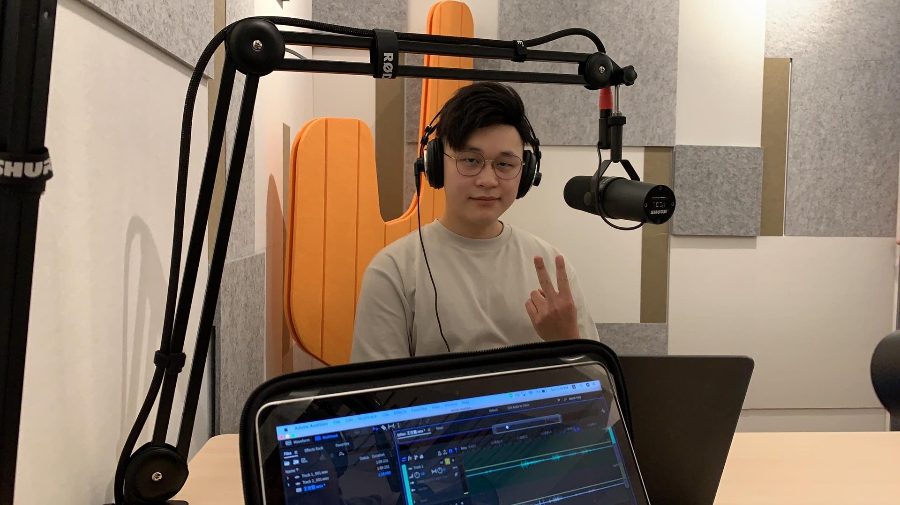
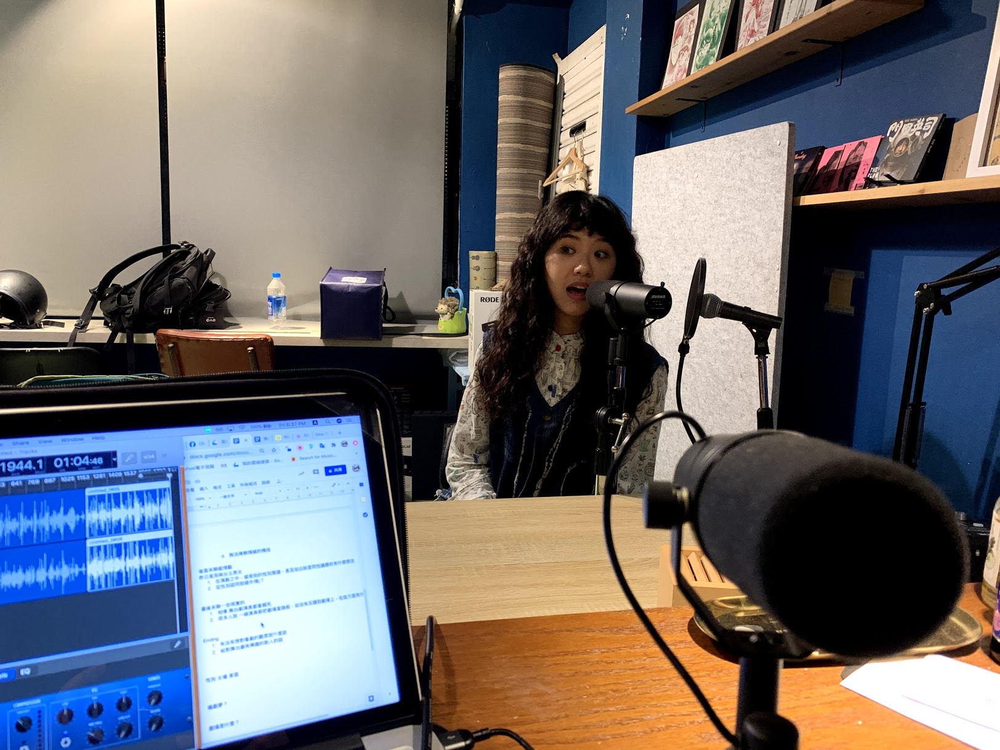
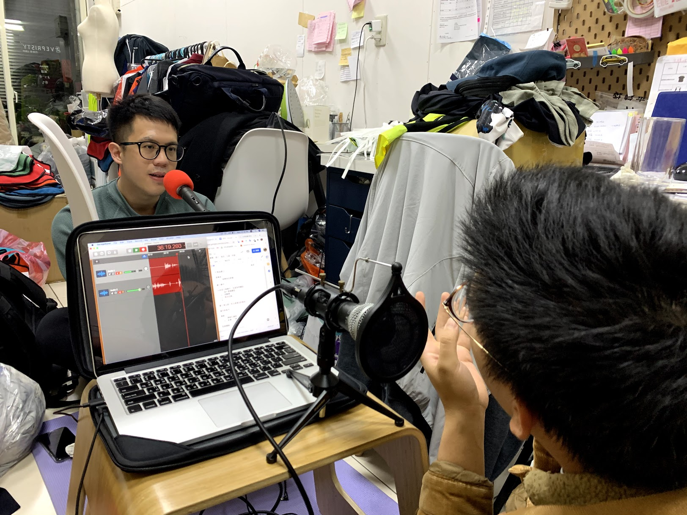
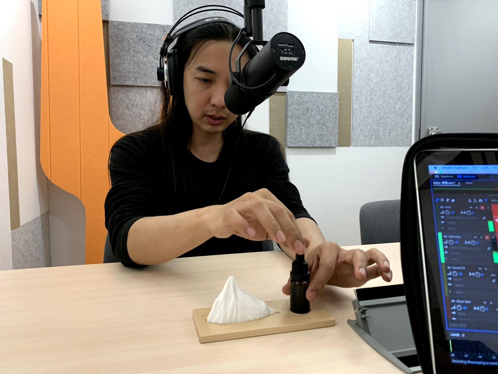
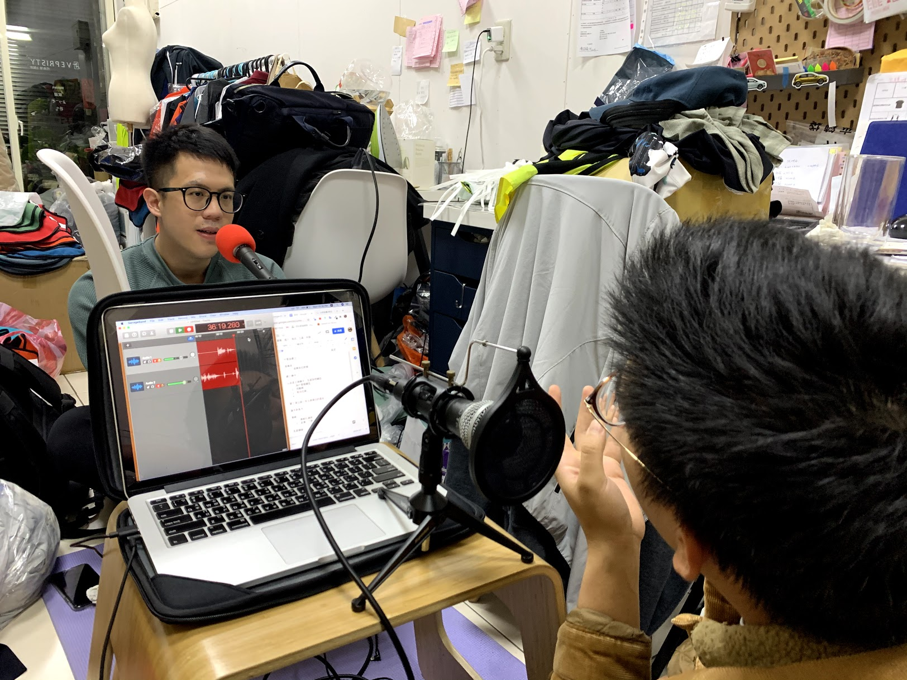
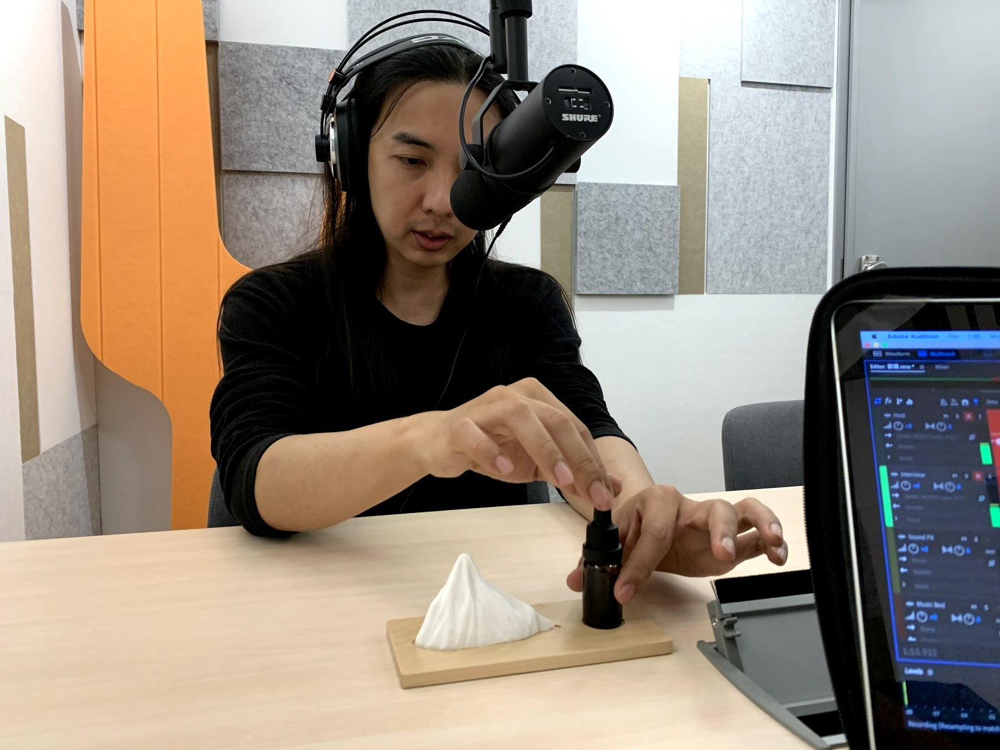
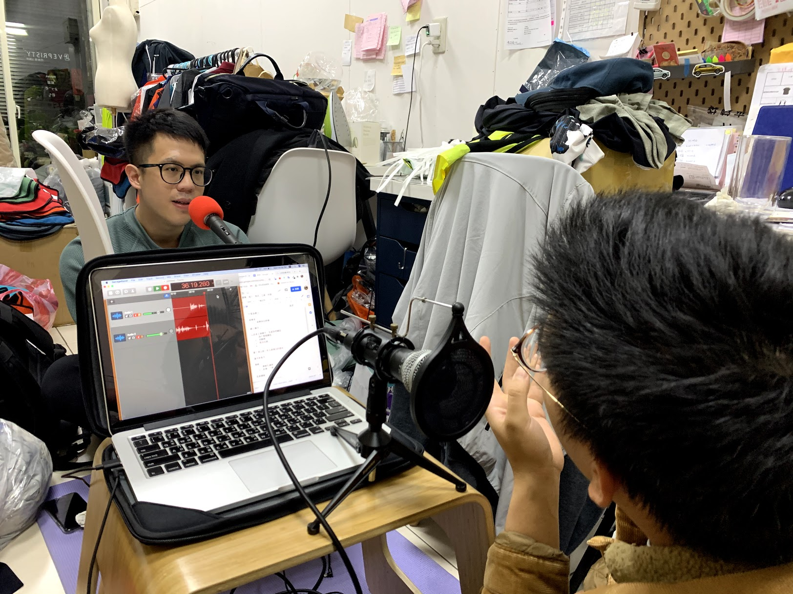
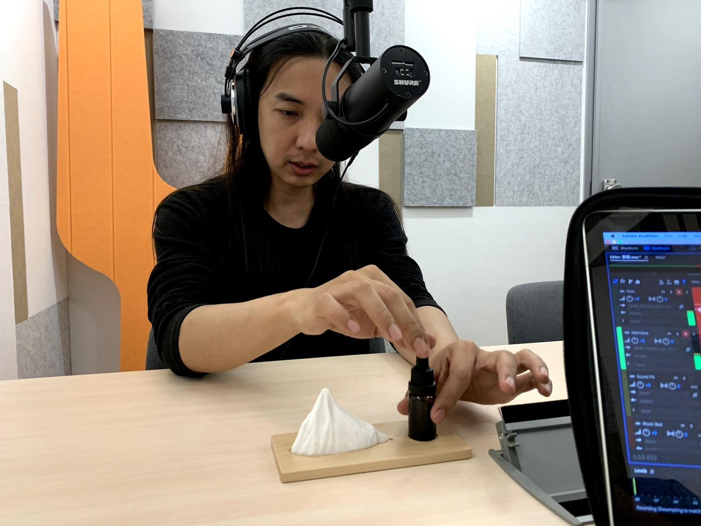
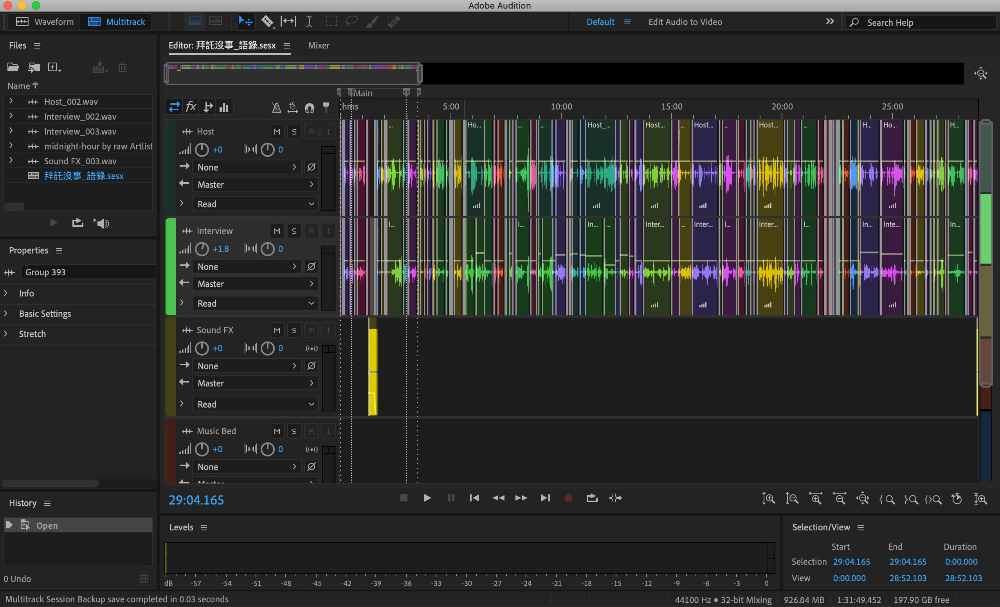

每一集我都會花不少時間在剪輯上，主要是去除一些口誤或是口頭禪等，讓聽眾的體驗更加完整。除了語意上的後製，也會依照不同的系列放上對應的開場音樂，讓有時常在聽節目的觀眾提高熟悉感。
Role
UI/UX Desinger
Tools
Miro for FlowChart
Miro for Wireframe
Illusturator
PhotoShop
Adobe Xd
Duration
9/2020
Concept
「唐先生打破了沈默」是我在2020年9月14日創立的一個Podcast訪談節目，至今也還在更新，節目超過50多集，並訪談過超過30位的嘉賓。 藉由訪談各式職業的人們來讓他們分享不同的生活模式與人生觀點。
Ideate
世界上無論是誰，既然是人的一生，那便是只有一次的機會去體驗。 當然我的節目也是不是什麼長生藥，而是一個管道能讓更多體驗及認識到不同職場與生活圈的人，分享每一個人生的獨一無二，也是種很棒的方式豐富自己。
開設節目的靈感來自原先的樂器行工作，當時身為店長的我每天都會吸收來自四面八發的人生故事，不論是難過到開心，每次的談話都能讓我省思好久，也從中意識到如果能讓這些故事的能量散播給更多人，那是件多美妙的事情。
Research
在這50多集之中，已經受訪超過30多位的來賓，有音樂人、醫生、畫家，甚至還有詩人等。要言之有物的做訪談，需要做非常多的功課，除了去查很多該職業的相關資訊外，最重要的是去看看他們現在所面臨的社會議題與困進，並列出至少15個問題，打好明確的訪剛，甚至會先寫下對方可能會講的回應或是我可能對應的方式。
Record
「與朋友聊天」是我主持的方式，沒有明確的問題敘述，而是把問題默默地安插在話語之間，像是在與朋友閒聊，講話是的拋接球。畢竟大家都不一定很擅長面對麥克風，因此要讓他們卸下心防，能更輕鬆的聊天，甚至講進心坎之中，說出一些更深層的回憶。問題也盡量避掉只能回答「是」與「不是」的這種問題，才能引導對方透露更多。
swipe right ➔


 





Edit

Social Media

Analysis
我Hosting的平台是SoundOn，它是個很方便的平台，可以讓像我這樣普通的小主持人也能輕易的看到節目的聽閱數與線性分析，是個很好的管道能讓我發現問題以及改善。